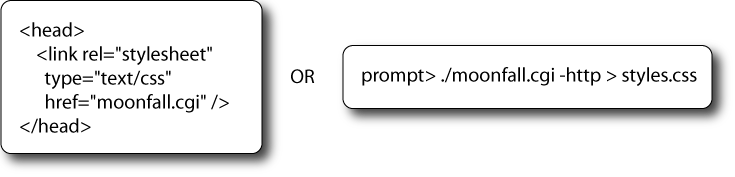
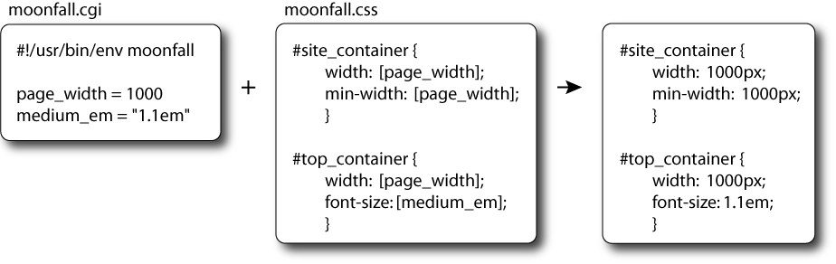
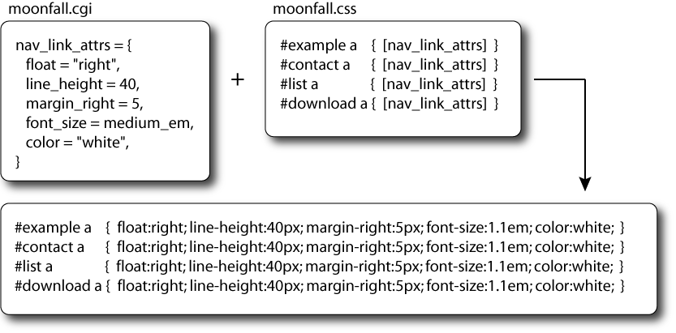
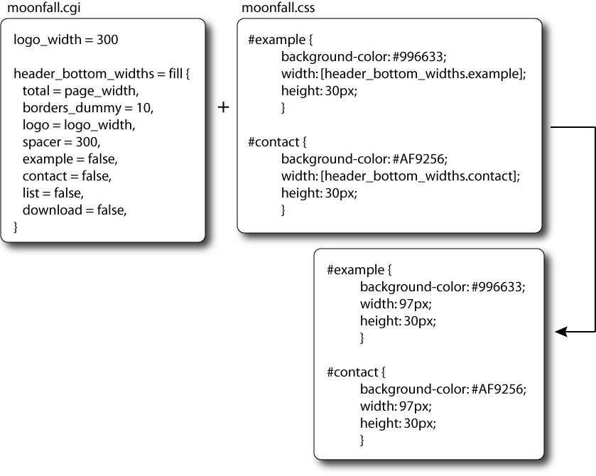

What is Moonfall?
A program to generate CSS, either dynamically as a cgi
script, or run from the command line.
Used in its simplest way- you get variables in css.
Used in its most advanced way- you can write a
powerful Lua script to create and modify CSS.
Running Moonfall

Simplest example

Simple example

Example using built in fill
function

I have to learn yet another programming language?!?!
You will need to know very little programming to accomplish much with Moonfall. If you could make sense of the above examples you are half way to Moonfall mastery.
What is Lua?
Lua is a programming language that is frequently used in computer games. It's used in World of Warcraft. It's also used in Adobe Lightroom.
Why Lua?
Why write a computer language when you can borrow one? Lua is designed to be embedded in other programs. It's also easy to use and looks almost familiar to web programmers.
How does Lua relate to Moonfall?
Lua is built into Moonfall. Moonfall handles tasks like reading in the css template file, doing substitutions, converting Lua data into css and outputting the css. Lua handles the hard stuff like figuring out what you want Moonfall to do. Lua is Moonfall's brain. As smart as Lua is, it doesn't know what css is or what to do with it, that is why it needs Moonfall.
All it does is text substitutions in a css file, why doesn't Moonfall generate all the css?
At first I tried to write a language that generated CSS.
I quickly came to realize that CSS is very good at
describing itself and no programming syntax comes close.
Try inventing a language syntax thats better at describing
this:
#container div #nav span a:hover {
color:red }
So I decided to have the markup do
what its best at and the programming language do what its
best at, and figure out a way to combine them in a user
friendly way.
How do I run Moonfall?
As cgi script or a command line script to generate a static css file, as shown in the first example.
What files are involved.
You need Moonfall installed (or just downloaded and sitting someplace where it can be found), a script to run it and tell it what to do, and a css template file.
Do I need to name those files moonfall.cgi and moonfall.css?
Nope. If you run Moonfall as a cgi script, then just put
the correct name in the html tag that references the css.
To rename the css template file (moonfall.css is the default),
change the top line of your Moonfall script to look like
this:
#!/usr/bin/env css=/path/to/css/file
moonfall
What's with the name? Sounds like a druid talent from World of Warcraft.
Lua
means moon in Portuguese (Lua is from
Brazil). Fall
comes from cascading styles sheets.
Yes I know it's a ridiculous name for software.
Do I have to run it as a cgi script?
No, you can run it to generate a static css file. But it's easier for development to run it dynamically so it updates the css automatically. This is shown in the first example.
How about Moonfall's performance?
Lua is a fast, and Moonfall is coded in c, so it's a pretty
fast combination. You might never have a performance
problem running it as a cgi script. For faster cgi
performance you can tell Moonfall to cache the output in a
file like this:
#!/usr/bin/env
cache=/tmp/moonfall.cache moonfall
If that is
still not fast enough just use Moonfall from the command
line and redirect the output into a file. Be sure to use
the -http switch to suppress the headers. For
example:
prompt> ./moonfall.cgi -http >
static.css
What if I don't have permission to install Moonfall?
Put the Moonfall binary someplace the web server has
permission to run it. The same directory as your
moonfall.cgi script is fine. Then at the top of your
script put the full path to Moonfall.
#!/usr/bin/env /path/to/moonfall
How do I debug my Moonfall script?
You can run it from the command line. If the css output is distracting you can suppress it with -css. Keep in mind that you can debug it just like a regular script, in other words, with lots of print()'s :)
How does the data from Lua get into the css?
Any global variable in the Lua script will be substituted
into the css in the corresponding tag. In other words,
if the global variable in the Moonfall script is MyVar = "blue",
it will be substituted at the tag [MyVar] as blue.
Strings are unaltered, like "1.2em", but numbers are appended
with "px". So MyVar=1 would result in "1px".
Then what about Lua tables?
A Lua table looks like this (notice the underscore in background_color!):
goth_theme = {
color = "red",
background_color = "black",
}
This will be placed into the css as
color: red;
background-color: black;
You can nest tables using dummy keys, just make sure
you don't reuse the same key in the same table or they
will overwrite.
float_attrs = {
float = "left",
clear = "both",
}
all_attrs = {
dummy1 = goth_theme,
dummy2 = float_attrs,
}
Moonfall will flatten nested tables, so from [all_attrs] you'll
get:
color: red;
background-color: black;
float: left;
clear: both;
Moonfall should take care of all the indenting so the output
looks good. It will also figure out if you wanted the attributes
all on one line or each on it's own line, for example:
#content {
[all_attrs]
}
will output as
#content {
color: red;
background-color: black;
float: left;
clear: both;
}
but:
#content { [all_attrs] }
Will output as
#content {
color: red;
background-color: black;
float: left;
clear: both;
}
What's the fill
function?
So far it's the only Lua function provided by Moonfall.
You provide it with a total value, and a number of other keys,
setting the unknowns to false
, and it will figure out the
unknown values and return it as a table. You can use this
function, or a chain of these, to have the dimensions of your web
design automatically rescale based off a few values. For
example:
page_width = 800
widths = fill {
total = page_width,
left = false,
center = 600,
right = false.
}
The results will be:
widths.left is 100
widths.center is 600
widths.right is 100
If you change total
to 1000 the new values would be:
widths.left is 200
widths.center is 600
widths.right is 200
If you gave left a value of 100 rather than false
you'd get:
widths.left is 100
widths.center is 600
widths.right is 300
Keep in mind that these results can be parameters for
another fill
function, and so on:
center_widths = fill {
total = widths.center,
left = false,
center = false,
right = false.
}
So all together you'll have:
widths.left is 100
widths.center is 600
widths.right is 300
center_widths.left is 200
center_widths.center is 200
center_widths.right is 200
Here is the live code for this page: Moonfall script, Moonfall css
Go here
for search and threads.
Go here
to subscribe, for archive, and another search.
Latest source
Linux binary (Intel)
OS X binary (Intel)
Windows binary
moonfallbinary wherever you need it. If you have root access consider installing it into /usr/local/bin, or maybe /usr/bin so you only have to start your Moonfall scripts with #!/usr/bin/env moonfall, but if you don't have permission for that just move it anywhere you can run it, but start your scripts with
What license?
GNU General Public License 3 , or (at your option) any later
version. If this is a real
problem contact me, but don't ask
me legal questions because you'll get what you payed for.